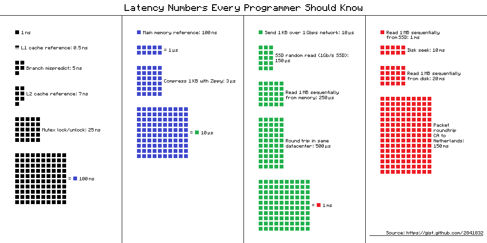

Storing and Accessing Data in Parallelism Friendly Formats
Overview
Teaching: 50 min
Exercises: 30 minQuestions
How is the performance of data access impacted by bandwidth and latency?
How can we use an object store to store data that is accessible over the internet?
How do we access data in an object store using Xarray?
Objectives
Understand the relative performance of memory, local disks, local networks and the internet.
Understand that object stores are a convienient and scalable way to store data to be accessed over the internet.
Understand how Zarr files can be structured in an object store friendly way.
Apply Xarray to access Zarr files stored in an object store.
Data Access Speeds
The time spent accessing data from disk is orders of magnitude more than accessing data stored in RAM and accessing data over a network is orders of magnitude more than accessing data on a local disk. This is visualised nicely in the diagram below

(from https://gist.github.com/hellerbarde/2843375)
Lets multiply all these durations by a billion:
Magnitudes:
Minute:
- L1 cache reference 0.5 s One heart beat (0.5 s)
- Branch mispredict 5 s Yawn
- L2 cache reference 7 s Long yawn
- Mutex lock/unlock 25 s Making a coffee
Hour:
- Main memory reference 100 s Brushing your teeth
- Compress 1K bytes with Zippy 50 min One episode of a TV show (including ad breaks)
Day:
- Send 2K bytes over 1 Gbps network 5.5 hr From lunch to end of work day
Week
- SSD random read 1.7 days A normal weekend
- Read 1 MB sequentially from memory 2.9 days A long weekend
- Round trip within same datacenter 5.8 days A medium vacation
- Read 1 MB sequentially from SSD 11.6 days Waiting for almost 2 weeks for a delivery
Year
- Disk seek 16.5 weeks A semester in university
- Read 1 MB sequentially from disk 7.8 months Almost producing a new human being
- The above 2 together 1 year
Decade
- Send packet CA->Netherlands->CA 4.8 years Average time it takes to complete a bachelor’s degree
We are going to have to wait a really long time to get data from the internet when compared to processing it locally. But in the modern era when we might be working with multiterabyte (or even petabyte) datasets it isn’t likely to be practical to store it all on our local computer. By applying parallel working patterns we can also have multiple computers each compute part of a dataset and/or we can have multiple computers each store part of the dataset allowing us to transfer several parts of it in parallel.
Parallel Filesystems
On many high performance computing (HPC) systems it is common for there to be a large parallel filesystem. These will spread data across a large number of physical disks and servers, when a user requests some data it might be supplied by several servers simultaneously. Since each disk can only supply data so fast (usually between 10s and 100s of megabytes per second) we can achieve faster data access by requesting from several disks spread across several servers. Many parallel filesystems will be configured to provide access speeds of multiple gigabytes per second. However HPC systems also tend to be shared systems with many users all running different tasks at any given time, so the activities of other users will also impact how quickly we can access data.
Object Stores
Object stores are a scalable way to store data in a manner that is readily accessible over the internet. They use the Hyper Text Transfer Protocol (HTTP) or its secure alternatie (HTTPS) to access “objects”. In this case each object will have a unique URL and the appearance of a file on a filesystem. Where object stores differ from traditional filesystem is that there isn’t any directory hierarchy to the objects, although sometimes object stores are configured to give the illusion of this. For example we might create object names that contain path separators. The underlying storage can “stripe” the data of an object across several disks and/or servers to achieve higher throughput speeds in a similar way to the parallel filesystems described above, this can allow object stores to scale very well to store both large numbers of objects and very large individual objects. Some object stores will also replicate an object across several locations to both improve reslience and performance.
Another benefit of object stores is that they allow clients to request just part of an object, this has spawned a number of “cloud optimised” file formats where some metadata describes what can be found in what part of the object and the client then requests only what it needs. This could be especially useful if say we have a very high resolution geospatial dataset and only wish to retreive the part relating to a specific area or we have a dataset which spans a long time period and we’re only interested in a short time period.
One of the most popular object stores is Amazon’s S3 which is used by many websites to store their contents. S3 is accessed via HTTP, typically using the GET method to request and object or using the PUT or DELETE methods. S3 also has a lot of features to manage who can access an object and whether they can only read it or read and write it. Many other object stores copy the S3 protocol both for accessing objects, managing permissions and metadata associated with them.
Zarr files
Zarr is a cloud optimised file format designed for working with multidimensional data. Its is very similar to NetCDF, but it splits up data into chunks. When requesting the Zarr file from an object store (or a local disk) we can limit which chunks we transfer. Zarr files contain a header which describes the structure of the file and information about the chunks, when loading the file this header will be loaded to allow the Zarr library to know about the rest of the file. Zarr is also designed to support multiple concurrent readers, allowing us to read the file in parallel using multiple threads or even with Dask tasks that are distributed across multiple computers. Zarr has been built with Python in mind and has libraries to allow native Python operations on Zarr. There is support for Zarr in other languages such as C in the recent versions of the NetCDF libraries.
Zarr and Xarray
Xarray can open Zarr files using the open_zarr function that is similar to the open_datset function we’ve been using to open NetCDF data. We will be using the outputs of the Near-Present-Day simulations developed by the National Oceanography Centre, specifically related to the eORCA025 model and covers the ocean globally. Each dataset can have more than 200GB, DO NOT DOWNLOAD IT!
import xarray as xr
ds = xr.open_zarr("https://noc-msm-o.s3-ext.jc.rl.ac.uk/npd-eorca025-jra55v1/T1m/so_abs")
ds
We can now see the metadata for the Zarr file. It includes 75 depth levels, 577 time steps and a 1206x1440
spatial resolution. In this case, there is only one variable, so_abs, which is the absolute salinity of the ocean. To access other variables, you can take a look on the NOC Near-Present-Day documentation. For example:
import xarray as xr
ds = xr.open_zarr("https://noc-msm-o.s3-ext.jc.rl.ac.uk/npd-eorca025-jra55v1/T1m/zos")
ds
In this case, the variable is zos, which is the “Sea Surface Height Above Geoid”. It only covers the ocean surface and don’t use the depth dimension. All of this information has come from the header of the Zarr file,
so far none of the actual data has been transferred, we have done what is known as a “lazy load” where data will only be transferred from the object store when we actually access it.
Let’s try and read it by slicing out a small part of the file, we’ll only get the zos dataset:
ssh = ds['zos'].isel(time_counter=slice(0,1),y=slice(500,700), x=slice(1000,1200))
ssh
We can see that ds_sub is now a 200x200x1 array that only takes up 156.25kB from the original 3.73GB file. Even at this point no data will have been transferred.
If we explore further and print the ssh array we’ll see that it is actually using a Dask array underneath.
print(ssh)
To convert this into a standard Xarray DataArray we can call .compute on the ssh.
ssh_local = ssh.compute()
We can now plot this by using:
ssh_local.plot()
Or access some of the data:
ssh_local[0,0,0]
It is important to note that this data is not on a regular grid. Therefore, slicing the data using isel will not give you an exact rectangular area, but only the data that lies within the boundaries of the grid. If you want to get a specific area, you may need to reproject the data to a regular grid. There are python libraries like iris and xESMF that help with this activity,
Plot Sea Surface Temperature
Extract and plot the sea surface temperature (sst variable) for the nearest date to January 1st 1965 that is in the dataset.
Solution
import xarray as xr ds = xr.open_zarr("https://noc-msm-o.s3-ext.jc.rl.ac.uk/npd-eorca025-jra55v1/T1m/tos_con") sst = ds['tos_con'].sel(time_counter="1965-01-01",method="nearest") sst.plot()
Calculate the mean sea surface temperature for two years
Calculate the mean sea surface temperature for the years between 1990 and 1991 using the same dataset as above.
Solution
import xarray as xr ds = xr.open_zarr("https://noc-msm-o.s3-ext.jc.rl.ac.uk/npd-eorca025-jra55v1/T1m/tos_con") sst = ds['tos_con'].sel(time_counter=slice("1990", "1991")) grouped_mean = sst.groupby("time_counter.year").mean() mean_sst = grouped_mean.mean(dim=['y','x']) # this will take the mean across the specified dimensions mean_sst = mean_sst.compute() mean_sst
Calculate the mean sea surface temperature for 10 years with Dask
Calculate the mean sea surface temperature for 1990 and 1999. Use the JASMIN Dask gateway to parallelise the calculation, use 10 worker threads and set the time_counter chunk size to 10 when opening the zarr file. Measure how long it takes to compute the result, try changing the number of workers up and down to see what the optimal number is.
Solution
import xarray as xr import dask_gateway gw = dask_gateway.Gateway("https://dask-gateway.jasmin.ac.uk", auth="jupyterhub") options = gw.cluster_options() options.worker_cores = 1 options.scheduler_cores = 1 options.worker_setup='source /apps/jasmin/jaspy/mambaforge_envs/jaspy3.10/mf-22.11.1-4/bin/activate ~/.conda/envs/esces' clusters = gw.list_clusters() if not clusters: cluster = gw.new_cluster(options, shutdown_on_close=False) else: cluster = gw.connect(clusters[0].name) cluster.adapt(minimum=1, maximum=10) client = cluster.get_client() client ds = xr.open_zarr("https://noc-msm-o.s3-ext.jc.rl.ac.uk/npd-eorca025-jra55v1/T1m/tos_con") sst = ds['sst'].sel(time_counter=slice("1990","1999")) # mean_sst = dataset.mean(dim=['lat','lon']) #better way to do this grouped_mean = sst.groupby("time_counter.year").mean() mean_sst = grouped_mean.mean(dim=['y','x']) result = client.compute(mean_sst).result() result.plot() cluster.shutdown()Optimal workers is probably 10 and execution should take around 22 seconds. Single threaded execution time is 57 seconds.
Data Catalogues
It is a common problem that environmental scientists will need to work with datasets that span across many files. There is a common practice with larger datasets stored in Zarr or NetCDF formats to split them into multiple files with either one variable per file or one time period per file. Once we have more than a few files in our dataset keeping the correct filenames or URLs can become more difficult, especially if those names change or data gets relocated.
There are several ways to solve this problem, most of then related on building a catalogue of the dataset. This catalogue can be a simple text file that lists the filenames and URLs of the files in the dataset (like this example), or it can be a more complex database or catalogue that stores metadata about the files and their contents.
Two most used catalogues for this type of data are STAC and Intake. STAC is a standard for describing geospatial data in a way that allows it to be easily discovered and accessed, while Intake is a Python library that provides a way to manage and access datasets in a more flexible way. We will show an example using intake.
To open a catalogue we call the open_catalog function in the intake library. By converting the response of this to a Python list we can find the names of all of the datasets
in the catalogue.
import intake
xcat = intake.open_catalog('https://raw.githubusercontent.com/intake/intake-xarray/master/examples/catalog.yml')
list(xcat)
Let’s open the image example and use the skimage library to plot it. First you will need to install the skimage library with the following command in the terminal:
mamba install -n esces scikit-image
from skimage.io import imshow
image = xcat.image.read()
imshow(image)
Key Points
We can process faster in parallel if we can read or write data in parallel too
Data storage is many times slower than accessing our computer’s memory
Object stores are one way to store data that is accessible over the web/http, allows replication of data and can scale to very large quantities of data.
Zarr is an object store friendly file format intended for storing large array data.
Zarr files are stored in chunks and software such as Xarray can just read the chunks that it needs instead of the whole file.
Xarray can be used to read in Zarr files